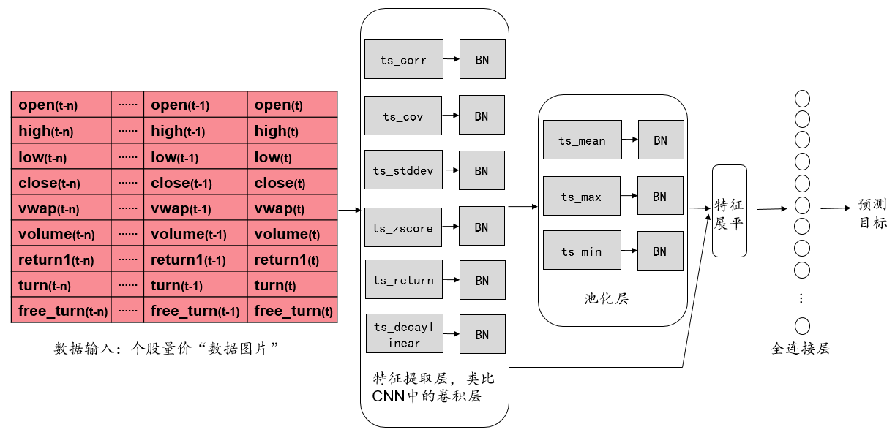
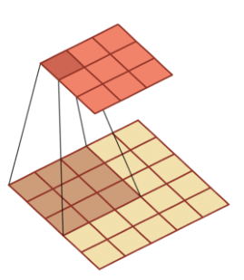
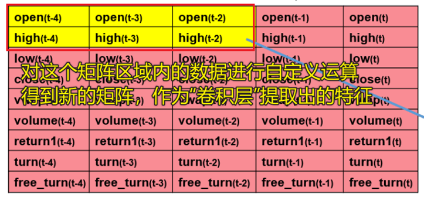
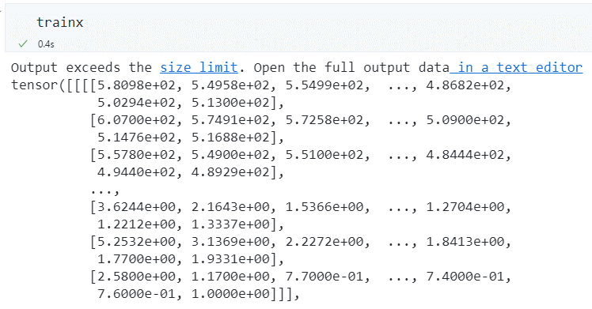
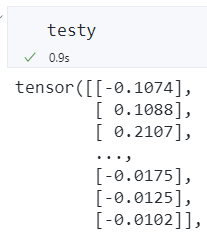
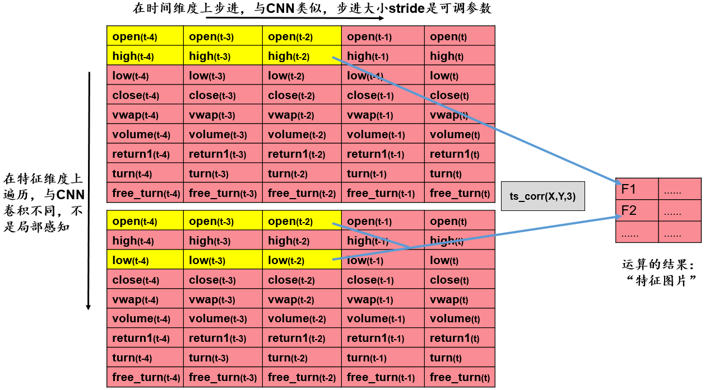
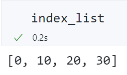
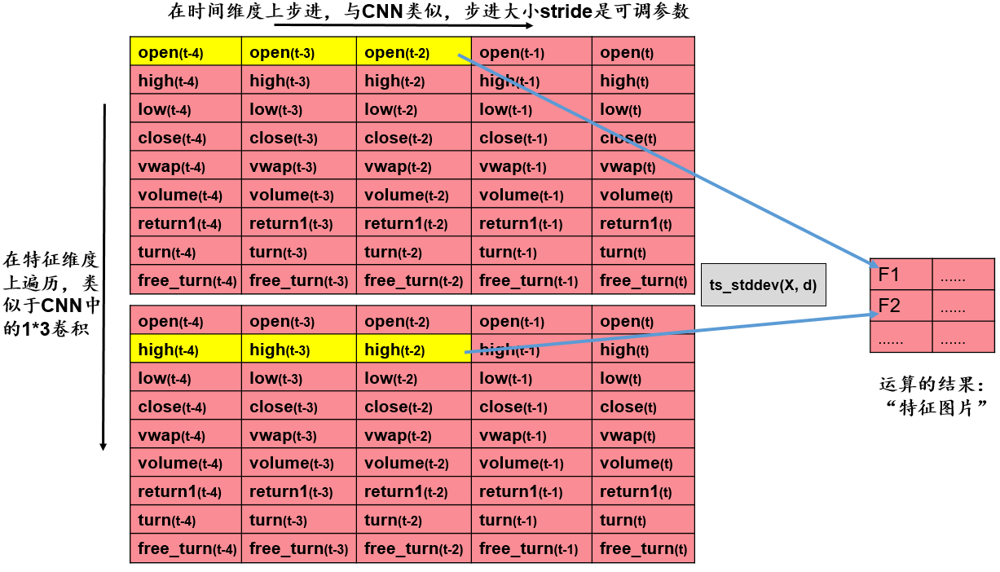

AlphaNet——基于深度学习的量价因子挖掘¶
借鉴卷积神经网络的思想，通过自定义运算符函数，构造类似卷积层的特征提取层。结合批标准化层、池化层、全连接层，搭建 AlphaNet-V1，实现从量价数据到收益率预测的自动挖掘。

思路框架¶
问题背景¶
传统的因子挖掘过程通常是由人工构造因子表达式，对多个单因子进行加权合成。面对大量的原始数据，人工基于投资经验，手动构造因子表达式生成单因子的过程是极其繁琐的。在因子合成阶段，通常是用 ICIR 加权平均等手段进行合成，这种简单的线性加权方式也限制了因子合成的多种可能性。
将卷积思想应用于因子挖掘¶
在卷积神经网络中，最关键的特征提取组件是卷积核。在图像识别领域，卷积核通过一个带有可优化的权重和偏置项的矩阵，对原始数据进行互相关操作。

我们可以将原始量价数据整理成一个二维矩阵，尝试使用卷积核对数据进行特征提取。
但是，如果完全采用传统的卷积操作，提取的特征就是：一定感受野范围内的特征的加权组合。这样的操作会有两个问题：
- 提取的特征只是某些特征数据的固定的加权组合，这极大地限制了因子表达式的可能性。
- 传统的卷积核只能感受局部范围内的数据，因此，我们输入的特征变量的上下顺序会影响提取出的特征。因此输入变量的顺序还需要人工干预。
由此看来，简单地套用卷积操作并不合适，但我们可以借鉴卷积核的“遍历操作”的思想，自定义运算符函数，实现类似“卷积层”的特征提取层。

具体的特征提取层将在后文介绍。经过特征提取后，可再添加批标准化层、池化层、全连接层，将原始数据转换为收益率的预测。
优化模型¶
对于上述将卷积思想应用于因子挖掘的方法，可以尝试对两个方向进行优化。
- 调整网络结构。添加更丰富的特征提取层，将池化层转换为可以记忆时序信息的循环神经网络。
- 调整标签值。将收益率值得预测转换为涨跌方向的预测和超额收益率方向的预测。
准备数据集¶
我们需要的特征均为量价数据，即 open, high, low, close, vwap, volume, return1, turn, free_turn 这 9 个量价指标在\(t-29\)到\(t\)时间段的\(9\times 30\)个特征。

Tushare 提供了免费的量价数据接口，在程序中导入 token，即可使用pro.daily()下载数据。
下面具体介绍获取数据的细节。
训练集和测试集包含的时间段¶
由于通过 Tushare 的免费接口获取数据的速度较慢（逐股票、逐日获取后再合并，而不是批量一次性获取，因此耗时较久），本文只截取了20220101至20220630这半年的数据作为训练集，20220930至20221231这一季度的数据作为测试集。没有用20220630至20221231的数据作为测试集，是因为希望训练集和验证集之间能够暂停一段时间，否则训练集的标签可能会包含未来信息，进而夸大测试集上的预测效果。
本项目下载数据的时间为 2022 年 12 月初，因此实际所用的验证集并不是完整的一季度。
采样的日期¶
如果对训练集和验证集包含的时间段中的每一个交易日均进行采样，会造成两个问题：
- 采样过于频繁，导致相邻日期的数据基本相近。
- 采样天数过多，下载数据的时间会非常久。
因此，本文使用间隔采样的方法，每间隔 10 个交易日进行一次采样。具体判断哪一天为采样日的函数为：
# 给定日期区间的端点，输出期间的定长采样交易日列表
def get_datelist(start: str, end: str, interval: int):
df = pro.index_daily(ts_code="399300.SZ", start_date=start, end_date=end)
date_list = list(df.iloc[::-1]["trade_date"])
sample_list = []
for i in range(len(date_list)):
if i % interval == 0:
sample_list.append(date_list[i])
return sample_list
其原理是基于沪深 300 指数（399300.SZ）的交易数据进行间隔采样。沪深 300 指数有数据的日期一定是交易日。
采样的股票¶
A 股市场的股票数量近 5000 只，若对每一只股票均进行采样也将耗费大量时间。本文对每个采样日，获取前 1000 只股票的数据。具体判断对哪些股票进行采样的函数为：
# 给定一个交易日，返回该日满足条件的 A 股股票列表
def get_stocklist(date: str, num: int):
start = str(pd.to_datetime(date) - timedelta(30))
start = start[0:4] + start[5:7] + start[8:10]
df1 = pro.index_weight(
index_code="000002.SH", start_date=start, end_date=date
) # 交易日当天的股票列表
codes = list(df1["con_code"])
codes = codes[0:1000] # 在每个截面期只选取 1000 只股票
return codes
其原理是基于 A 股指数（000002.SH）的前 1000 只成分股进行采样。
获取单个股票在单个交易日的数据¶
get_x_y()函数返回两个值，一个是前 30 个交易日的 9 个指标面板（9*30），一个是未来 10 天的收益率。
def get_x_y(code: str, date: str, pass_day: int, future_day: int, len1: int, len2: int):
start = str(pd.to_datetime(date) - timedelta(pass_day * 2))
start = start[0:4] + start[5:7] + start[8:10]
end = str(pd.to_datetime(date) + timedelta(future_day * 2))
end = end[0:4] + end[5:7] + end[8:10]
df_price = pro.daily(
ts_code=code, start_date=start, end_date=date # OHLC,pct_change,volume
)
df_basic = pro.daily_basic(ts_code=code, start_date=start, end_date=date)
df_return = pro.daily(ts_code=code, start_date=date, end_date=end).iloc[::-1][
"close"
]
if (
(df_price.shape[0] == df_basic.shape[0])
& (df_price.shape[0] == len1)
& (df_return.shape[0] == len2)
): # 判断数据的完整性
df_price = df_price.iloc[0:pass_day, [2, 3, 4, 5, 8, 9]].fillna(0.1)
df_basic = df_basic.iloc[0:pass_day, [3, 4, 5]].fillna(0.1)
data = np.array(
pd.merge(df_price, df_basic, left_index=True, right_index=True).iloc[::-1].T
)
# print(data.shape)
# 未来十个交易日的收益率
dfr = df_return.iloc[0:future_day]
ret = dfr.iloc[-1] / dfr.iloc[0] - 1 # 后十个交易日的收益率
return data, ret
else:
return None, None # 数据缺失的预处理
舍弃缺失值¶
在获取单个股票在单个交易日的数据时，若某只股票的数据有缺失，则需舍弃它，否则在输入到神经网络时会带有缺失值。
基于沪深 300 指数，判断某日应有的数据长度的函数：
def get_length(date: str, pass_day: int, future_day: int):
start = str(pd.to_datetime(date) - timedelta(pass_day * 2))
start = start[0:4] + start[5:7] + start[8:10]
end = str(pd.to_datetime(date) + timedelta(future_day * 2))
end = end[0:4] + end[5:7] + end[8:10]
len_1 = pro.index_daily(ts_code="399300.SZ", start_date=start, end_date=date).shape[
0
]
len_2 = pro.index_daily(ts_code="399300.SZ", start_date=date, end_date=end).shape[0]
return len_1, len_2
在get_x_y()函数中，基于len_1和len_2判断了数据的完整性。若有缺失值则返回空值，不会计入数据集中。
获取数据集¶
筛选出哪一天、哪一只股票需要进行采样后，我们就可以获取数据了。
对每一个采样日、每一只股票进行循环。配合rich.progress可以展示下载数据的进度条。
rich.progress的使用示例可以参考 这里。
def get_dataset(
num: int, start: str, end: str, interval: int, pass_day: int, future_day: int
):
X_train = []
y_train = []
trade_date_list = get_datelist(start, end, interval)
# 添加进度条
with Progress() as progress:
task_date = progress.add_task("[red]Date...", total=len(trade_date_list))
for date in trade_date_list:
# 更新进度条
progress.update(task_date, advance=1)
stock_list = get_stocklist(date, num)
len1, len2 = get_length(date, pass_day, future_day)
task_stock = progress.add_task(
"[green]Stock...", total=len(range(len(stock_list)))
)
for i in range(len(stock_list)):
# 更新进度条
progress.update(task_stock, advance=1)
code = stock_list[i]
x, y = get_x_y(code, date, pass_day, future_day, len1, len2)
try:
if (x.shape[0] == 9) & (x.shape[1] == pass_day):
X_train.append(x)
y_train.append(y)
except Exception:
continue
return X_train, y_train
数据示例：


保存.npy数据到本地¶
为了方便训练模型，可以将数据以.npy格式存储到本地。在训练模型时可以直接使用np.load('../data/X_train.npy')载入数据。
# 参数设定：使用过去 30 天的数据预测未来 10 天的收益率，回归问题
X_train, y_train = get_dataset(
num=1000, start="20220101", end="20220630", interval=10, pass_day=30, future_day=10
)
X_test, y_test = get_dataset(
num=1000, start="20220931", end="20221231", interval=10, pass_day=30, future_day=10
)
print("there are in total", len(X_train), "training samples")
print("there are in total", len(X_test), "testing samples")
# 将数据保存到本地供离线训练
Xa = np.array(X_train)
ya = np.array(y_train)
Xe = np.array(X_test)
ye = np.array(y_test)
np.save("./X_train.npy", Xa)
np.save("./y_train.npy", ya)
np.save("./X_test.npy", Xe)
np.save("./y_test.npy", ye)
整个获取数据的时间约为 3 个小时，共获取到 11825 条训练数据和 4943 条测试数据（数据量不为 1000 的整数倍，是因为舍弃了部分缺失值）。
-
特征数据为\(9\times 30\)的个股量价数据构成的矩阵。9 行代表 9 个量价特征，30 代表\(t-29\)至\(t\)这 30 天的数据。
-
标签数据为个股在某个交易日往后 10 个交易日的收益率。


搭建 AlphaNet-V1¶
AlphaNet-V1 的整体网络结构¶
下图展示了 AlphaNet-V1 的整体网络结构。它由 7 个平行的特征提取层、3 个平行的池化层和 1 个全连接层组成。其中，特征提取层和池化层后都有一个批标准化层（Batch Normalization）。
输入数据是一个\(9\times30\)的个股量价“数据图片”，预测目标为个股从当日到 10 个交易日后的收益率数值。
特征提取层（类似卷积层）¶
AlphaNet 的输入数据是一个\(9\times30\)的个股量价“数据图片”。如果简单地套用卷积神经网络处理图片像素数据的操作，则卷积操作只能在感受野内将若干日期的若干量价数据进行加权平均，经过卷积层得到的特征将变得很难解释，也不符合传统构造量价因子的方式。
因此，借鉴卷积神经网络 CNN 的思想，我们可以将多种运算符函数作为自定义网络层进行特征提取。本文实现了 7 种运算符，分别是ts_corr, ts_cov, ts_stddev, ts_zscore, ts_return, ts_decaylinear, ts_mean，它们的含义如下：
| 名称 | 定义 |
|---|---|
ts_corr |
过去 d 天 X 值构成的时序数列和 Y 值构成的时序数列的相关系数。 |
ts_cov |
过去 d 天 X 值构成的时序数列和 Y 值构成的时序数列的协方差。 |
ts_stddev |
过去 d 天 X 值构成的时序数列的标准差。 |
ts_zscore |
过去 d 天 X 值构成的时序数列的平均值除以标准差。 |
ts_return |
(X - delay(X, d))/delay(X, d)-1, delay(X, d) 为 X 在 d 天前的取值。 |
ts_decaylinear |
过去 d 天 X 值构成的时序数列的加权平均值，权数为 d, d – 1, …, 1（权数之和应为 1，需进行归一化处理），其中离现在越近的日子权数越大。 |
ts_mean |
过去 d 天 X 值构成的时序数列的平均值。 |
这 7 个运算符函数中，ts_corr和ts_cov需要从 9 行数据中提取 2 行数据，并计算相关系数和协方差。其他 5 个运算符函数仅需针对某一行数据计算标准差、变化率等。下面针对这两种情况分别举例说明。
基于双变量的特征提取层——以ts_corr为例¶
我们的输入数据是\(9\times30\)的矩阵，每一行是某个量价指标在最近 30 个交易日的值。基于双变量进行特征提取的步骤为：
- 取出两行数据。
- 对于取出的两行数据，给定步长
stride，在时间维度上对两行数据进行遍历，计算两行数据的相关系数。例如，当\(stride=3\)时，下一次计算将在时间维度上往右步进 3 步，我们将进行\(\frac{30}{3}=10\)次运算。 - 将运算结果整理到新的矩阵，得到新的“特征图片”，作为后续池化层的输入。

从 9 行数据中任取 2 行，有\(\tbinom{9}{2}=36\)种取法。假设我们设定步长为 10，则得到的新的“特征图片”的维数是\(36\times3\)。
基于双变量的特征提取层——代码实现¶
需要给定原始矩阵Matrix、两两组合的列表combination、反转的两两组合的列表combination_rev以及每次遍历运算的起始索引列表index_list。
- 生成
combination和combination_rev的代码为：
# 生成卷积操作时需要的两列数据的组合的列表
def generate_combination(N):
"""
args:
N: int, the number of rows of the matrix
return:
combination: list, the combination of two columns of the matrix
combination_rev: list, the combination of two rows of the matrix, which is the reverse of combination
"""
col = []
col_rev = []
for i in range(1, N):
for j in range(0, i):
col.append([i, j])
col_rev.append([j, i])
return col, col_rev
# 生成卷积操作时需要的两列数据的组合的列表
combination, combination_rev = generate_combination(9)

- 生成
index_list的代码为：
# 根据输入的矩阵和卷积操作的步长，计算卷积操作的索引
def get_index_list(matrix, stride):
"""
args:
matrix: torch.tensor, the input matrix
stride: int, the stride of the convolution operation
return:
index_list: list, the index of the convolution operation
"""
W = matrix.shape[3]
if W % stride == 0:
index_list = list(np.arange(0, W + stride, stride))
else:
mod = W % stride
index_list = list(np.arange(0, W + stride - mod, stride)) + [W]
return index_list
# 根据输入的矩阵和卷积操作的步长，计算卷积操作的索引
# Inception 模块使用的卷积操作的步长为 10
index_list = get_index_list(np.zeros((1, 1, 9, 30)), 10)

- 基于双变量的特征提取代码为：
# 过去 d 天 X 值构成的时序数列和 Y 值构成的时序数列的相关系数
def ts_corr4d(self, Matrix, combination, combination_rev):
new_H = len(combination)
index_list = self.index_list
list = [] # 存放长度为 len(index_list)-1 的相关系数
for i in range(len(index_list) - 1):
start_index = index_list[i]
end_index = index_list[i + 1]
data = Matrix[:, :, combination, start_index:end_index] # N*1*new_H*2*d
data2 = Matrix[:, :, combination_rev, start_index:end_index] # N*1*new_H*2*d
std1 = data.std(axis=4, keepdims=True) # N*1*new_H*2*1, 在时序上求标准差
std2 = data2.std(axis=4, keepdims=True) # N*1*new_H*2*1, 在时序上求标准差
std = (std1 * std2).mean(axis=3, keepdims=True) # N*1*new_H*1*1
list.append(std)
std = (
np.squeeze(np.array(list))
.transpose(1, 2, 0)
.reshape(-1, 1, new_H, len(index_list) - 1)
+ 0.01
) # N*1*new_H*len(index_list)-1 # 加上 0.01, 防止除 0
# N*1*new_H*len(index_list)-1
cov = self.ts_cov4d(Matrix, combination, combination_rev)
corr = cov / std # N*1*new_H*len(index_list)-1
return corr
# 过去 d 天 X 值构成的时序数列和 Y 值构成的时序数列的协方差
def ts_cov4d(self, Matrix, combination, combination_rev):
new_H = len(combination)
index_list = self.index_list
list = [] # 存放长度为 len(index_list)-1 的协方差
for i in range(len(index_list) - 1):
start_index = index_list[i]
end_index = index_list[i + 1]
data = Matrix[:, :, combination, start_index:end_index] # N*1*new_H*2*d
data2 = Matrix[:, :, combination_rev, start_index:end_index] # N*1*new_H*2*d
mean1 = data.mean(axis=4, keepdims=True) # N*1*new_H*2*1, 在时序上求均值
mean2 = data2.mean(axis=4, keepdims=True) # N*1*new_H*2*1, 在时序上求均值
spread1 = data - mean1 # N*1*new_H*2*d, 在时序上求偏差
spread2 = data2 - mean2 # N*1*new_H*2*d, 在时序上求偏差
cov = (
(spread1 * spread2).sum(axis=4, keepdims=True) / (data.shape[4] - 1)
).mean(
axis=3, keepdims=True
) # N*1*new_H*1*1
list.append(cov)
cov = (
np.squeeze(np.array(list))
.transpose(1, 2, 0)
.reshape(-1, 1, new_H, len(index_list) - 1)
) # N*1*new_H*len(index_list)-1
return torch.from_numpy(cov)
经过上述特征提取后，得到的新的“特征图片”的维数是\(36\times3\)。我们后续会将其进行池化和展平。注意到，这 36 行数据的上下位置不影响池化和展平操作得到的结果（展平后每个量的地位都一样），因此原始输入数据的\(9\times30\)的矩阵内部的上下可以任意排列。这也避免了卷积神经网络处理图片像素数据时只能感知局部数据的问题。
基于单变量的特征提取层——以ts_stddev为例¶
基于单变量进行特征提取的步骤为：
- 取出一行数据。
- 对于取出的一行数据，给定步长
stride，在时间维度上对这一行数据进行遍历，计算这一行数据的标准差。例如，当\(stride=3\)时，下一次计算将在时间维度上往右步进 3 步，我们将进行\(\frac{30}{3}=10\)次运算。 - 将运算结果整理到新的矩阵，得到新的“特征图片”，作为后续池化层的输入。

从 9 行数据中任取 1 行，有\(\tbinom{9}{1}=9\)种取法。假设我们设定步长为 10，则得到的新的“特征图片”的维数是 9*3。
基于单变量的特征提取层——代码实现¶
单变量的特征提取只需给定原始数据Matrix和每次遍历运算的起始索引列表index_list。
# 过去 d 天 X 值构成的时序数列的标准差
def ts_stddev4d(self, Matrix):
# 只需要对单变量做卷积操作，不需要将变量两两组合。因此输出的 H 可以保持和输入的 H 一致
new_H = Matrix.shape[2]
index_list = self.index_list
list = [] # 存放长度为 len(index_list)-1 的标准差
for i in range(len(index_list) - 1):
start_index = index_list[i]
end_index = index_list[i + 1]
data = Matrix[:, :, :, start_index:end_index] # N*1*H*d
std = data.std(axis=3, keepdims=True) # N*1*H*1
list.append(std)
std4d = (
np.squeeze(np.array(list))
.transpose(1, 2, 0)
.reshape(-1, 1, new_H, len(index_list) - 1)
) # N*1*new_H*len(index_list)-1
return torch.from_numpy(std4d)
# 过去 d 天 X 值构成的时序数列的平均值除以标准差
def ts_zcore4d(self, Matrix):
# 只需要对单变量做卷积操作，不需要将变量两两组合。因此输出的 H 可以保持和输入的 H 一致
new_H = Matrix.shape[2]
index_list = self.index_list
list = [] # 存放长度为 len(index_list)-1 的 zcore
for i in range(len(index_list) - 1):
start_index = index_list[i]
end_index = index_list[i + 1]
data = Matrix[:, :, :, start_index:end_index] # N*1*H*d
mean = data.mean(axis=3, keepdims=True) # N*1*H*1
std = data.std(axis=3, keepdims=True) + 0.01 # N*1*H*1, 加上 0.01, 防止除以 0
list.append(mean / std)
zscore = (
np.squeeze(np.array(list))
.transpose(1, 2, 0)
.reshape(-1, 1, new_H, len(index_list) - 1)
) # N*1*new_H*len(index_list)-1
return torch.from_numpy(zscore)
# (X - delay(X, d))/delay(X, d)-1, 其中 delay(X, d) 为 X 在 d 天前的取值
def ts_return4d(self, Matrix):
# 只需要对单变量做卷积操作，不需要将变量两两组合。因此输出的 H 可以保持和输入的 H 一致
new_H = Matrix.shape[2]
index_list = self.index_list
list = [] # 存放长度为 len(index_list)-1 的 return
for i in range(len(index_list) - 1):
start_index = index_list[i]
end_index = index_list[i + 1]
data = Matrix[:, :, :, start_index:end_index] # N*1*H*d
# N*1*H*1, 在分母加上 0.01, 防止除以 0
return_ = data[:, :, :, -1] / (data[:, :, :, 0] + 0.01) - 1
list.append(return_)
ts_return = (
np.squeeze(np.array(list))
.transpose(1, 2, 0)
.reshape(-1, 1, new_H, len(index_list) - 1)
) # N*1*new_H*len(index_list)-1
return torch.from_numpy(ts_return)
# 过去 d 天 X 值构成的时序数列的加权平均值，权数为 d, d – 1, …, 1（权数之和应为 1, 需进行归一化处理）, 其中离现在越近的日子权数越大
def ts_decaylinear4d(self, Matrix):
new_H = Matrix.shape[2]
index_list = self.index_list
list = [] # 存放长度为 len(index_list)-1 的加权平均值
for i in range(len(index_list) - 1):
start_index = index_list[i]
end_index = index_list[i + 1]
range_ = end_index - start_index
weight = np.arange(1, range_ + 1)
weight = weight / weight.sum() # 权重向量
data = Matrix[:, :, :, start_index:end_index] # N*1*H*d
wd = (data * weight).sum(axis=3, keepdims=True) # N*1*H*1
list.append(wd)
ts_decaylinear = (
np.squeeze(np.array(list))
.transpose(1, 2, 0)
.reshape(-1, 1, new_H, len(index_list) - 1)
) # N*1*new_H*len(index_list)-1
return torch.from_numpy(ts_decaylinear)
# 过去 d 天 X 值构成的时序数列的平均值
def ts_mean4d(self, Matrix):
new_H = Matrix.shape[2]
index_list = self.index_list
list = [] # 存放长度为 len(index_list)-1 的平均值
for i in range(len(index_list) - 1):
start_index = index_list[i]
end_index = index_list[i + 1]
data = Matrix[:, :, :, start_index:end_index] # N*1*H*d
mean_ = data.mean(axis=3, keepdims=True) # N*1*H*1
list.append(mean_)
ts_mean = (
np.squeeze(np.array(list))
.transpose(1, 2, 0)
.reshape(-1, 1, new_H, len(index_list) - 1)
) # N*1*new_H*len(index_list)-1
return torch.from_numpy(ts_mean)
上述 7 个函数就相当于定义好了卷积操作的“卷积核”，并且这些操作中没有需要优化的参数，只需要按照给定的运算符进行前向传播。
图像识别领域中的卷积操作是需要优化卷积核的，这也是和图像识别领域中的卷积操作有区别的地方。
批标准化层（Batch Normalization）¶
Batch Normalization 通过将每一层的原始输出进行标准化（减去均值，除以标准差），还可以乘以\(\gamma\)（Scale），再加上\(\beta\)（Offset）。\(\gamma\)和\(\beta\)都是超参数，可以用神经网络训练它们。
具体的数学公式如下。
求第\(l\)层的批均值：
求第\(l\)层的批方差：
批标准化的结果：
经过上述操作，即可将\(Z^l\)转换为\(\hat{Z}^l\)。
在批标准化中，可优化的参数是\(\gamma\)和\(\beta\)。如果没有\(\gamma\)和\(\beta\)，则批标准化的运算就为常规的 z-score 标准化。
关于 Batch Normalization 的笔记可以参考 这篇帖子。
池化层¶
在 AlphaNet-V1 中，池化层与传统的图像识别中的池化层一致，都是对某个区域的数据提取最大值、平均值和最小值。
由于 PyTorch 中没有内置最小池化层，我们可以将数据取相反数后，进行最大池化，再将最大池化的结果取相反数，就可以实现最小池化。
# 池化层，尺度为 1*d
self.max_pool = nn.MaxPool2d(kernel_size=(1, self.d))
self.avg_pool = nn.AvgPool2d(kernel_size=(1, self.d))
# 最小池化等价于相反数的最大池化，后续会对结果取反
self.min_pool = nn.MaxPool2d(kernel_size=(1, self.d))
特征提取层和池化层的特征维数变化分析¶
在经过特征提取层、池化层后（批标准化层不改变特征维数，因此不考虑），将特征提取层和池化层的输出均展平后再拼接，得到\(702\times1\)的特征。
下面解释维数为\(702\times 1\)是如何得到的。
-
特征提取层展平后得到\(351\times1\)的特征。
-
有 2 个特征提取层是基于双变量的，它们的输出维数是\(36\times3\)。其他 5 个特征提取层都是基于单变量的，它们的输出维数是\(9\times3\)。
-
因此，特征提取层展平后得到\((2\times36+5\times9)\times3=117\times3=351\)维特征。
-
池化层展平后也会得到\(351\times1\)的特征。
-
池化层的输入就是特征提取层的输出，因此池化层的输入是\(117\times3\)。
- 池化操作的步长
stride是len(index_list)-1\(=3\)，即最大池化、平均池化和最小池化都将\(117\times3\)转换为\(117\times1\)的矩阵。 -
将 3 个\(117\times1\)的矩阵展平后，得到\(3*117=351\)维特征。
-
将特征提取层和池化层的输出均展平后再拼接，得到\(351+351=702\)维特征。
全连接层¶
全连接层包含 30 个神经元，接受输入为\(702\times 1\)的矩阵，经过一个隐藏层转换为\(30\times1\)的矩阵，经过 RELU 激活函数、Dropout Rate 为 0.5，再输出到\(1*1\)的神经元作为预测结果。
data = self.fc1(data) # N*30
data = self.relu(data)
data = self.dropout(data)
data = self.fc2(data) # N*1
# 线性激活函数，无需再进行激活
data = data.to(torch.float)
继承nn.module类，改写前向传播forward函数¶
为了让我们自定义的函数在神经网络中能够运行，我们需要继承nn.module类并改写前向传播forward函数。
自定义特征提取层、池化层的代码实现¶
自定义的Inception类实现了特征提取层（以及随后的批标准化）、池化层（以及随后的批标准化），并将输出结果展平成\(702\times 1\)的矩阵。
具体的运算符函数在前面已经定义过了，这里不再详细展开。
class Inception(nn.Module):
"""
Inception, 用于提取时间序列的特征，具体操作包括：
1. kernel_size 和 stride 均为 d=10 的特征提取层，类似于卷积层，用于提取时间序列的特征。具体包括：
1. ts_corr4d: 过去 d 天 X 值构成的时序数列和 Y 值构成的时序数列的相关系数
2. ts_cov4d: 过去 d 天 X 值构成的时序数列和 Y 值构成的时序数列的协方差
3. ts_stddev4d: 过去 d 天 X 值构成的时序数列的标准差
4. ts_zscore4d: 过去 d 天 X 值构成的时序数列的平均值除以标准差
5. ts_return4d: (X - delay(X, d))/delay(X, d)-1, 其中 delay(X, d) 为 X 在 d 天前的取值
6. ts_decaylinear4d: 过去 d 天 X 值构成的时序数列的加权平均值，权数为 d, d – 1, …, 1（权数之和应为 1，需进行归一化处理），其中离现在越近的日子权数越大
7. ts_mean4d: 过去 d 天 X 值构成的时序数列的平均值
各操作得到的张量维数：
1. 由于涉及两个变量的协方差，因此 ts_corr4d 和 ts_cov4d 的输出为 N*1*36*3
2. 其余操作均只涉及单变量的时序计算，因此输出为 N*1*9*3
2. 对第 1 步的输出进行 Batch Normalization 操作，输出维数仍为 N*1*36*3 或 N*1*9*3
3. 对于第 2 步得到的张量，kernel_size 为 3 的池化层。具体包括：
1. max_pool: 过去 d 天 X 值构成的时序数列的最大值
2. avg_pool: 过去 d 天 X 值构成的时序数列的平均值
3. min_pool: 过去 d 天 X 值构成的时序数列的最小值
以上三个操作的输出均为 N*1*117*1
4. 对第 3 步的输出进行 Batch Normalization 操作，输出维数仍为 N*1*117*1
5. 将第 2 步和第 4 步的输出展平后进行拼接，得到的张量维数为 N*(2*36*3+5*9*3+3*117) = N*702
"""
def __init__(self, combination, combination_rev, index_list):
"""
combination: 卷积操作时需要的两列数据的组合
combination_rev: 卷积操作时需要的两列数据的组合，与 combination 相反
index_list: 卷积操作时需要的时间索引
"""
super(Inception, self).__init__()
# 卷积操作时需要的两列数据的组合
self.combination = combination
self.combination_rev = combination_rev
# 卷积操作时需要的时间索引
self.index_list = index_list
self.d = len(index_list) - 1
# 卷积操作后的 Batch Normalization 层
self.bc1 = nn.BatchNorm2d(1)
self.bc2 = nn.BatchNorm2d(1)
self.bc3 = nn.BatchNorm2d(1)
self.bc4 = nn.BatchNorm2d(1)
self.bc5 = nn.BatchNorm2d(1)
self.bc6 = nn.BatchNorm2d(1)
self.bc7 = nn.BatchNorm2d(1)
# 池化层，尺度为 1*d
self.max_pool = nn.MaxPool2d(kernel_size=(1, self.d))
self.avg_pool = nn.AvgPool2d(kernel_size=(1, self.d))
# 最小池化等价于相反数的最大池化，后续会对结果取反
self.min_pool = nn.MaxPool2d(kernel_size=(1, self.d))
# 池化操作后的 Batch Normalization 层
self.bc_pool1 = nn.BatchNorm2d(1)
self.bc_pool2 = nn.BatchNorm2d(1)
self.bc_pool3 = nn.BatchNorm2d(1)
def forward(self, data):
"""
data: 输入的数据，维度为 batch_size*1*9*30
"""
# 本层的输入为 batch_size*1*9*30, 在训练时不需要反向传播，因此可以使用 detach() 函数
data = data.detach().cpu().numpy()
combination = self.combination
combination_rev = self.combination_rev
# 卷积操作
conv1 = self.ts_corr4d(data, combination, combination_rev).to(torch.float)
conv2 = self.ts_cov4d(data, combination, combination_rev).to(torch.float)
conv3 = self.ts_stddev4d(data).to(torch.float)
conv4 = self.ts_zcore4d(data).to(torch.float)
conv5 = self.ts_return4d(data).to(torch.float)
conv6 = self.ts_decaylinear4d(data).to(torch.float)
conv7 = self.ts_mean4d(data).to(torch.float)
# 卷积操作后的 Batch Normalization
batch1 = self.bc1(conv1)
batch2 = self.bc2(conv2)
batch3 = self.bc3(conv3)
batch4 = self.bc4(conv4)
batch5 = self.bc5(conv5)
batch6 = self.bc6(conv6)
batch7 = self.bc7(conv7)
# 在 H 维度上进行特征拼接
feature = torch.cat(
[batch1, batch2, batch3, batch4, batch5, batch6, batch7], axis=2
) # N*1*(2*36+5*9)*3 = N*1*117*3
# 同时将特征展平，准备输入到全连接层
feature_flatten = feature.flatten(start_dim=1) # N*(117*3) = N*351
# 对多通道特征进行池化操作，每层池化后面都有 Batch Normalization
# 最大池化
maxpool = self.max_pool(feature) # N*1*117*1
maxpool = self.bc_pool1(maxpool)
# 平均池化
avgpool = self.avg_pool(feature) # N*1*117*1
avgpool = self.bc_pool2(avgpool)
# 最小池化
# N*1*117*1, 最小池化等价于相反数的最大池化，并对结果取反
minpool = -self.min_pool(-1 * feature)
minpool = self.bc_pool3(minpool)
# 特征拼接
pool_cat = torch.cat(
[maxpool, avgpool, minpool], axis=2
) # N*1*(3*117)*1 = N*1*351*1
# 将池化层的特征展平
pool_cat_flatten = pool_cat.flatten(start_dim=1) # N*351
# 拼接展平后的特征
feature_final = torch.cat(
[feature_flatten, pool_cat_flatten], axis=1
) # N*(351+351) = N*702
return feature_final
# 过去 d 天 X 值构成的时序数列和 Y 值构成的时序数列的相关系数
def ts_corr4d(self, Matrix, combination, combination_rev):
...
# 过去 d 天 X 值构成的时序数列和 Y 值构成的时序数列的协方差
def ts_cov4d(self, Matrix, combination, combination_rev):
...
# 过去 d 天 X 值构成的时序数列的标准差
def ts_stddev4d(self, Matrix):
...
# 过去 d 天 X 值构成的时序数列的平均值除以标准差
def ts_zcore4d(self, Matrix):
...
# (X - delay(X, d))/delay(X, d)-1, 其中 delay(X, d) 为 X 在 d 天前的取值
def ts_return4d(self, Matrix):
...
# 过去 d 天 X 值构成的时序数列的加权平均值，权数为 d, d – 1, …, 1（权数之和应为 1, 需进行归一化处理）, 其中离现在越近的日子权数越大
def ts_decaylinear4d(self, Matrix):
...
# 过去 d 天 X 值构成的时序数列的平均值
def ts_mean4d(self, Matrix):
...
自定义 AlphaNet 的代码实现¶
整合前面的各层，封装到 AlphaNet 中。
class AlphaNet(nn.Module):
def __init__(
self, combination, combination_rev, index_list, fc1_num, fc2_num, dropout_rate
):
super(AlphaNet, self).__init__()
self.combination = combination
self.combination_rev = combination_rev
self.fc1_num = fc1_num
self.fc2_num = fc2_num
# 自定义的 Inception 模块
self.Inception = Inception(combination, combination_rev, index_list)
# 两个全连接层
self.fc1 = nn.Linear(fc1_num, fc2_num) # 702 -> 30
self.fc2 = nn.Linear(fc2_num, 1) # 30 -> 1
# 激活函数
self.relu = nn.ReLU()
# dropout
self.dropout = nn.Dropout(dropout_rate)
# 初始化权重
self._init_weights()
def _init_weights(self):
# 使用 xavier 的均匀分布对 weights 进行初始化
nn.init.xavier_uniform_(self.fc1.weight)
nn.init.xavier_uniform_(self.fc2.weight)
# 使用正态分布对 bias 进行初始化
nn.init.normal_(self.fc1.bias, std=1e-6)
nn.init.normal_(self.fc2.bias, std=1e-6)
def forward(self, data):
data = self.Inception(data) # N*702
data = self.fc1(data) # N*30
data = self.relu(data)
data = self.dropout(data)
data = self.fc2(data) # N*1
# 线性激活函数，无需再进行激活
data = data.to(torch.float)
return data
使用torchsummary包查看网络结构¶
from torchsummary import summary
test = AlphaNet(
combination, combination_rev, index_list, fc1_num=702, fc2_num=30, dropout_rate=0.5
)
summary(test, input_size=(1, 9, 30))
----------------------------------------------------------------
Layer (type) Output Shape Param #
================================================================
BatchNorm2d-1 [-1, 1, 36, 3] 2
BatchNorm2d-2 [-1, 1, 36, 3] 2
BatchNorm2d-3 [-1, 1, 9, 3] 2
BatchNorm2d-4 [-1, 1, 9, 3] 2
BatchNorm2d-5 [-1, 1, 9, 3] 2
BatchNorm2d-6 [-1, 1, 9, 3] 2
BatchNorm2d-7 [-1, 1, 9, 3] 2
MaxPool2d-8 [-1, 1, 117, 1] 0
BatchNorm2d-9 [-1, 1, 117, 1] 2
AvgPool2d-10 [-1, 1, 117, 1] 0
BatchNorm2d-11 [-1, 1, 117, 1] 2
MaxPool2d-12 [-1, 1, 117, 1] 0
BatchNorm2d-13 [-1, 1, 117, 1] 2
Inception-14 [-1, 702] 0
Linear-15 [-1, 30] 21,090
ReLU-16 [-1, 30] 0
Dropout-17 [-1, 30] 0
Linear-18 [-1, 1] 31
================================================================
Total params: 21,141
Trainable params: 21,141
Non-trainable params: 0
----------------------------------------------------------------
Input size (MB): 0.00
Forward/backward pass size (MB): 0.01
Params size (MB): 0.08
Estimated Total Size (MB): 0.10
----------------------------------------------------------------
自定义的特征提取层不需要训练参数，只需要按照规定的运算函数完成前向传播即可。同样地，池化层也不需要训练参数。
需要训练的参数来自：批标准化的\(\gamma\)和\(\beta\)，全连接层的 weight 和 bias。
载入数据¶
继承Dataset类，改写__getitem__¶
class FactorData(Dataset):
def __init__(self, train_x, train_y):
self.len = len(train_x)
self.x_data = train_x
self.y_data = train_y
def __getitem__(self, index):
"""
指定读取数据的方式：根据索引 index 返回 dataset[index]
"""
return self.x_data[index], self.y_data[index]
def __len__(self):
return self.len
设定 Batch Size¶
将数据载入到 DataLoader 中¶
# 将数据载入到 DataLoader 中
train_data = FactorData(trainx, trainy)
train_loader = DataLoader(
dataset=train_data, batch_size=batch_size, shuffle=False
) # 不打乱数据集
test_data = FactorData(testx, testy)
test_loader = DataLoader(
dataset=test_data, batch_size=batch_size, shuffle=False
) # 不打乱数据集
训练和测试模型¶
将 AlphaNet 实例化¶
# 构建模型
alphanet = AlphaNet(
combination=combination,
combination_rev=combination_rev,
index_list=index_list,
fc1_num=702,
fc2_num=30,
dropout_rate=0.5,
)
设定优化器¶
weight_list, bias_list = [], []
for name, p in alphanet.named_parameters():
# 将所有的 bias 参数放入 bias_list 中
if "bias" in name:
bias_list += [p]
# 将所有的 weight 参数放入 weight_list 中
else:
weight_list += [p]
# weight decay: 对所有 weight 参数进行 L2 正则化
optimizer = optim.RMSprop(
[
{"params": weight_list, "weight_decay": 1e-5},
{"params": bias_list, "weight_decay": 0},
],
lr=1e-4,
momentum=0.9,
)
设定损失函数为均方误差 MSE¶
训练和测试模型¶
由于 AlphaNet-V1 的网络结构较为简单，模型在 5 到 10 个 Epoch 的训练后即收敛，因此我们设定训练轮次epoch_num为 5。
训练和测试模型的代码如下：
epoch_num = 5
train_loss_list = []
test_loss_list = []
best_test_epoch, best_test_loss = 0, np.inf
seed = 0
for epoch in range(1, epoch_num + 1):
train_loss, test_loss = 0, 0
# 在训练集中训练模型
alphanet.train() # 关于。train() 的作用，可以参考 https://stackoverflow.com/questions/51433378/what-does-model-train-do-in-pytorch
train_batch_num = 0
for data, label in tqdm(train_loader, f"Epoch {epoch}-train", leave=False):
train_batch_num += 1
# 准备数据
data, label = data.to(torch.float), label.to(torch.float)
# 得到训练集的预测值
out_put = alphanet(data)
# 计算损失
loss = criterion(out_put, label)
# 将损失值加入到本轮训练的损失中
train_loss += loss.item()
# 梯度清零
optimizer.zero_grad() # 关于。zero_grad() 的作用，可以参考 https://stackoverflow.com/questions/48001598/why-do-we-need-to-call-zero-grad-in-pytorch
# 反向传播求解梯度
loss.backward()
# 更新权重参数
optimizer.step()
# 测试模式
alphanet.eval()
test_batch_num = 0
with torch.no_grad():
for data, label in tqdm(test_loader, f"Epoch {epoch}-test ", leave=False):
test_batch_num += 1
data, label = data.to(torch.float), label.to(torch.float)
# 得到测试集的预测值
y_pred = alphanet(data)
# 计算损失
loss = criterion(y_pred, label)
# 将损失值加入到本轮测试的损失中
test_loss += loss.item()
train_loss_list.append(train_loss / train_batch_num)
test_loss_list.append(test_loss / test_batch_num)
绘制训练集和测试集上损失的变化¶
# 画出损失函数的变化
fig = plt.figure(figsize=(9, 6))
# 字号
plt.rcParams["font.size"] = 16
ax = fig.add_subplot(111)
ax.plot(range(1, epoch_num + 1), train_loss_list, "r", label="train loss")
ax.plot(range(1, epoch_num + 1), test_loss_list, "b", label="test loss")
# 设置 x 轴刻度为整数
ax.xaxis.set_major_locator(ticker.MultipleLocator(1))
# 设置 y 轴范围
ax.set_ylim(bottom=0, top=0.1)
ax.legend()
ax.set_xlabel("Epoch")
ax.set_ylabel("MSE Loss")
plt.show()

经过测试发现，训练集和验证集在训练 5 轮左右就已经收敛，损失已不再下降。为了探究模型给出了什么样的预测值，我们接下来比较部分样本标签的预测值和真实值。
预测值和真实值的比较¶
为方便查看，我们截取最后一批训练样本的前 200 个样本，对比模型的预测标签值和真实标签值。
# 绘制部分预测值和真实值
y_pred = y_pred.detach().numpy()
label = label.detach().numpy()
# 截取部分数据
part = range(0, 200)
plt.plot(y_pred[part], label="pred")
plt.plot(label[part], label="true")
plt.legend()
plt.show()

AlphaNet-V1 给出的标签预测值几乎都为常数，只在少部分样本点有突出值，这并不是一个理想的收益率预测值。对于标签预测值几乎都为常数的情况，我推测原因可能是：
- AlphaNet-V1 的网络结构较简单，只使用了 7 个平行的特征提取层、3 个平行的池化层和一个全连接层。简单的网络结构限制了参数的选择范围，为了减少损失，模型可能会倾向于选择常数作为标签预测值。
- AlphaNet-V1 用的池化层通过取最大、平均和最小的操作，将 3 个在时序值转换为 1 个值。而这三个时序值仍然具有时序信息，但简单的池化层会丧失这一时序信息。
保存模型¶
将模型的结构和参数均保存到本地，方便后续使用。
改进方向¶
后续我们将从两个方向对 AlphaNet-V1 进行改进：
- 调整网络结构。AlphaNet-V1 的网络结构较简单，我们将在 AlphaNet-V3 版本中加入不同步长
stride的特征提取层，并将现有的池化层转换为可以记忆时序信息的门控循环单元（GRU）。 - 调整标签值。AlphaNet-V1 预测的标签值是个股在未来 10 个交易日的收益率。我们将在 AlphaNet-V3 版本中将预测标签转换为涨跌方向（1 代表上涨，即收益率大于 0；0 代表不变或下跌，即收益率小于或等于 0）和超额收益方向（1 代表收益率大于当批的平均收益率，0 代表收益率小于或等于当批的平均收益率）。